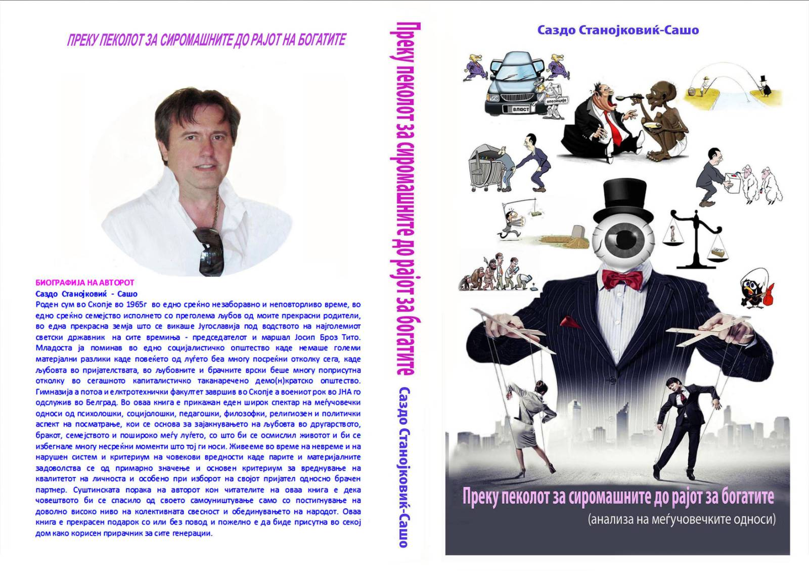
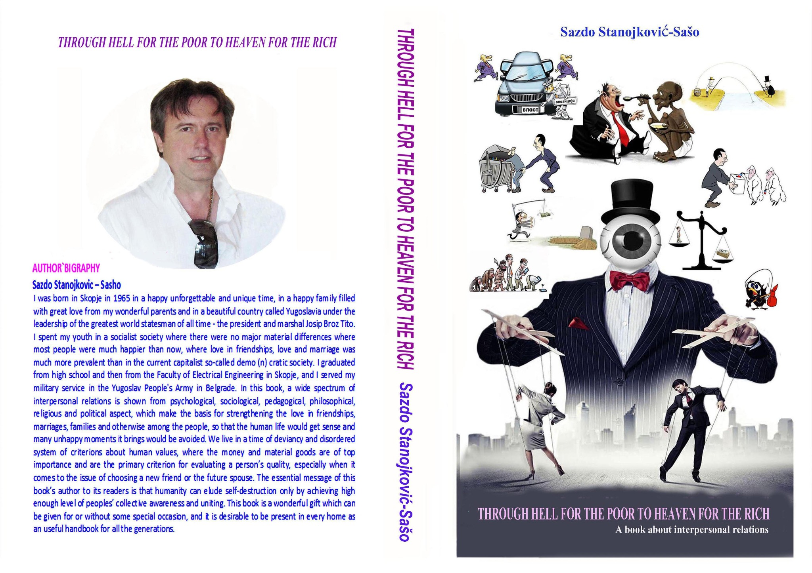

Преку пеколот за сиромашните до рајот на богатите
Интернет-преглед · Скопје 2022 · 11 страници

АВТОРСКА БИБЛИОТЕКА · КНИГА 1
Книга за меѓучовечките односи
МАКЕДОНСКИ
Во доставениот авторски опис книгата е претставена како широко разгледување на меѓучовечките односи од психолошки, социолошки, педагошки, филозофски, религиозен и политички агол. Авторот го поставува фокусот на љубовта, пријателството, бракот, семејството, комуникацијата, вредносните критериуми, материјалните разлики, егото и колективната свесност.
Текстот ја претставува книгата како животен прирачник и како резултат на долгогодишно аналитичко и практично искуство. Овие квалификации се авторска самоопределба и на платформата се пренесуваат како дел од неговиот опис, а не како независна научна оценка.
Квалитетните меѓучовечки односи, според описот, се врзуваат со заемна почит, безусловна љубов, искреност, доверба и повисоко ниво на свесност. Авторот изразува желба книгата да биде достапна на што повеќе читатели и на повеќе јазици.
ENGLISH
A book about interpersonal relations
The supplied English description presents the book as a broad examination of interpersonal relations from psychological, sociological, pedagogical, philosophical, religious and political perspectives. Its recurring themes include love, friendship, marriage, family, communication, values, material differences, ego and collective awareness.
The English source describes the work as scientific, philosophical, psychological and practically useful. Those labels are presented here as the author’s own characterization of the work, not as an independent academic assessment by this platform.
The author states that he wants the work to reach a wide readership, to be affordable, and to become available in English and other world languages, with proceeds from sales intended to support further printing and dissemination.
ИНТЕРНЕТ-ПРЕГЛЕД / INTERNET PREVIEW
Доставените PDF-датотеки се 11-странични интернет-презентации, а не целосниот ракопис на книгата. Содржат корица, библиографски/авторски податоци, краток опис, тематска содржина и биографски материјал. Ова е корисен бесплатен преглед пред читателот да побара печатен примерок.
Интернет-преглед · Скопје 2022 · 11 страници
Internet preview · Skopje 2022 · 11 pages
Интернет-прегледот останува бесплатен како промотивен материјал; продажбата/нарачката се однесува на печатениот примерок или на друго издание што авторот изречно ќе го понуди.
КОРИЦИ / COVERS


ДОСТАПНОСТ / AVAILABILITY
Цената, залихата, испораката и евентуалната дигитална верзија ги потврдува авторот.
Контактирај го Саздо